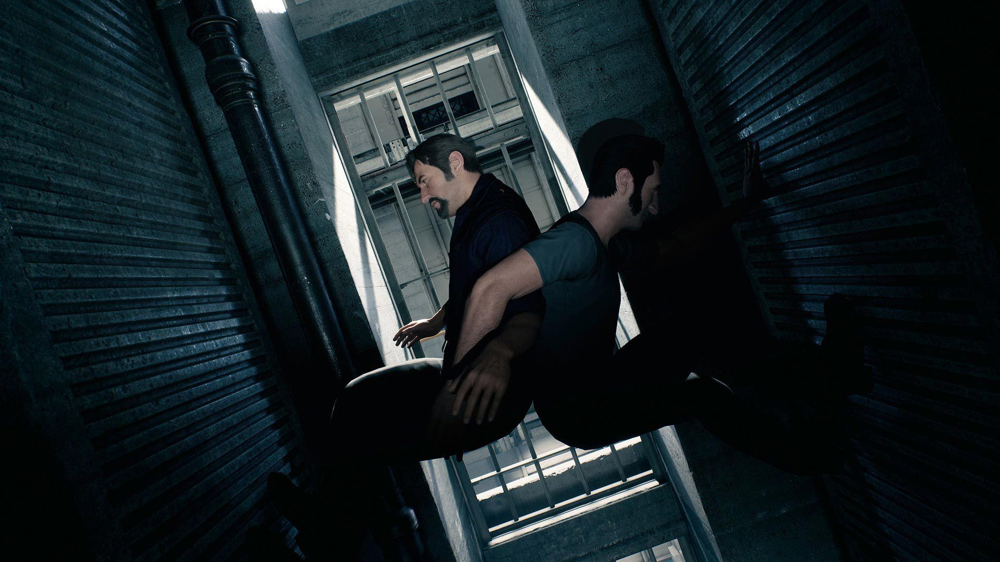
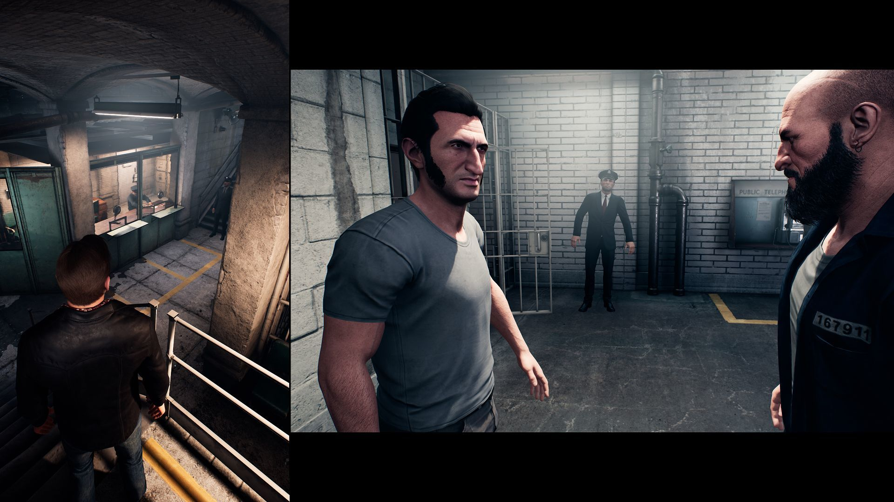
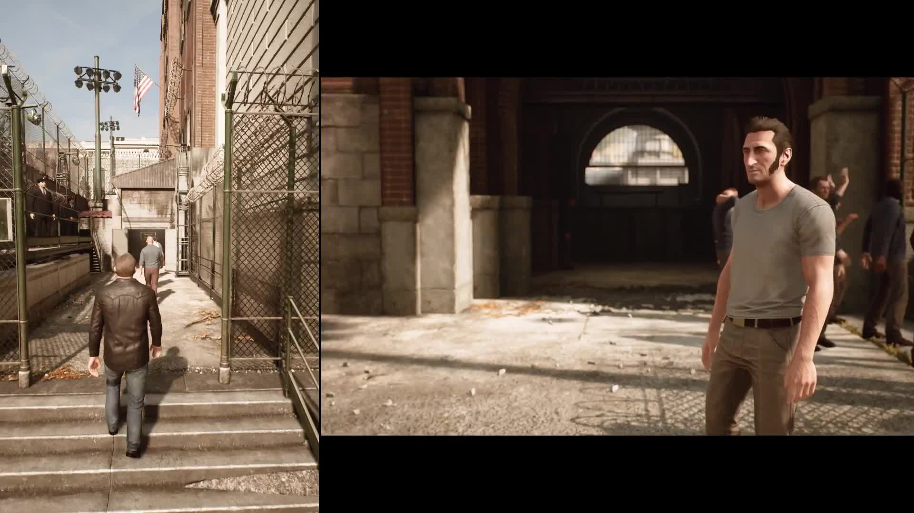
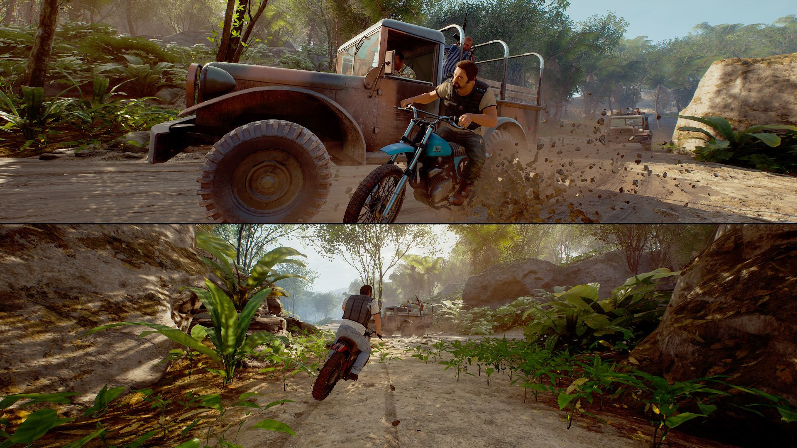

A Way Out
A Way Out ve Hikayesi
Şimdi gelelim A Way Out'a. Oyunda Vincent ve Leo isimli iki karakterimiz yer almakta. İki oyuncu bu karakterler arasında seçimini yaptıktan hemen sonra, hikayemize başlıyoruz. Fragmanlarda gördüğümüz hapishane oyunun başlangıç yeri ve burada hikayenin temelini öğrenerek iki karakter arasında kurulan bağın başlangıcına şahit oluyoruz. Birbirlerini kısa bir süredir tanıyan ama adeta bir kardeş gibi arkalarını koruyan bu ikilinin maceraları gerçekten görmeye değer. Oyunun hikayesinin sadece güzel olduğunu söylemek ile yetineceğim. Çünkü, bu oyunun temeli zaten hikayesi ve sunduğu sinematik deneyimi. Yani ne kadar az Spoiler yerseniz, oyundan o kadar keyif alırsınız.
Oyunun hikaye anlatımı fazlasıyla başarılı. Size sunulan seçenekler, geçen diyaloglar, karakterlerin geçmişte yaşadıkları olaylar yüzünden sahip olduğu duygusal yaralar, harika bir şekilde işlenmiş. Bu da oyunun oynanabilirliğini bir hayli yükseltiyor. Toplamda sekiz saatlik bir oynanış süresine sahip olan oyun, kısa görünse de aslında yeterli. Çünkü, oyun aslında sinematik bir deneyim sunmakta ve oynanış süresi kadar sinematik de mevcut. Oyun daha uzun olsaydı belki oyuncular sıkılabilirdi. Ayrıca, iki oyuncunun birlikte oynamak için sürekli bir araya gelmeye çalışması da aslında vakit harcamakta.
Unreal Engine ile geliştirilen A Way Out, sahip olduğu grafiklerle bizleri etkilemeyi başardı. Bir açık dünya oyunu olmasa da oyunun çevre detayları yüksek tutulmuş ve bu detaylar üzerinde çok çalışılmış. Açık bir arazide olmanıza rağmen bölümünün size sunduğu alandan dışarı çıkamıyoruz. Ancak, çıksaydık ben hala tarlalarda koşuyordum. Sıcak bir renk paletine sahip olan oyun, atmosferi daha oyuncu canlısı bir hale getiriyor ve kendine çekiyor. Kısacası oyunda görsel açıdan her şey güzel bir şekilde çalışmakta. İkili arasında bazen sürtüşmeler olabiliyor. Vincent genellikle sakin ve daha akıllı bir plan ile yaklaşmayı isterken, Leo vur, kır, parçala metoduna başvurmakta. Size sunulan bu seçimler, hikayenin gidişatına etki etmekte. Bu da demek oluyor ki oyunda bir kaç farklı son var. Uzun zamandır başarılı bir co-op oyunu oynamamıştım. Tabi ki bu oyunu n tamamen co-op üzerine kurulu olması, bir çok oyuncunun satın almasındaki temel etken. A Way Out'un co-op sistemi başarılı bir şekilde çalışıyor. Ekran ortadan ikiye bölünmüş olsa da iki karakterin farklı görevleri olduğu için size ayrılan alan küçülüp büyüyebiliyor. Bu genellikle bir karakter sinematik ekrana geçiş yaptığı zaman oluyor.
Sonuç olarak A Way Out, co-op oynanışı hiç yapılmayan bir şekilde ortaya koyarak oyuncuları bir araya getiriyor ve deneyimlenmesi gereken bir hikaye sunuyor. Uygun fiyatı ve bir kişinin ücretsiz oynayacak olması oyunu ön plana çıkartan temel öğelerden.